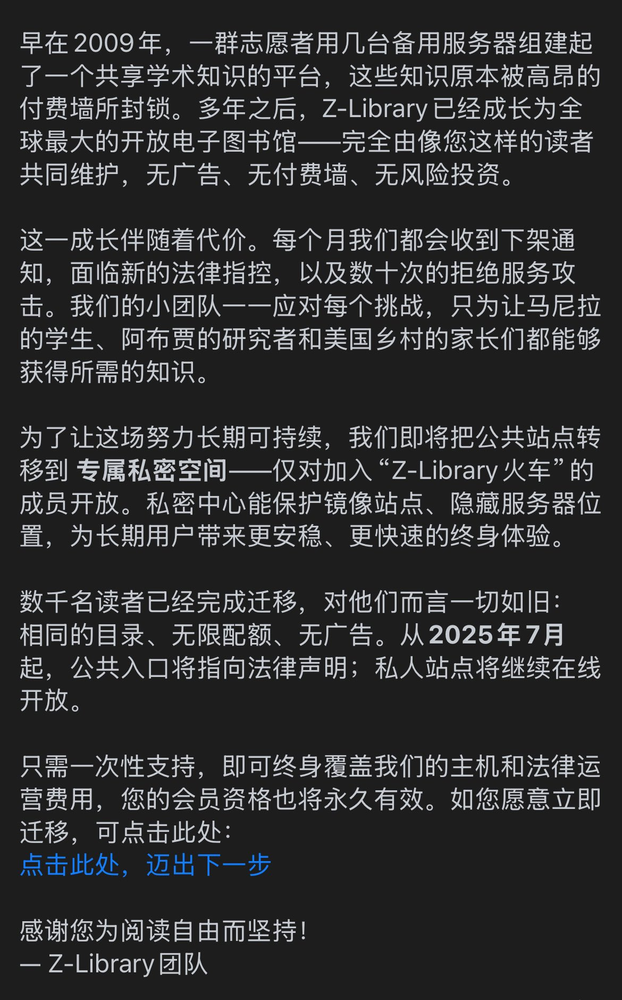

たたなこ🏳️⚧️🍥
@tatanakots
@dudao2024 @Z_Lib_official 并不，此类自由网站就是典型的不理会DMCA的灰色产物，我之前也做过类似的平台，不过收到DMCA后根本不会去处理，并且用GDPR防止服务器被投诉到停机

読道社
@dudao2024
经常有朋友截图告诉我，Z-library 上有我们的电子书。我们郑重声明：本社从来没有发行过电子书，这些书都是盗版，属于侵权行为。
这家号称“自由阅读”的平台，宣称“只为让马尼拉的学生、阿布贾的研究者和美国乡村的家长们都能够获得所需的知识”，但前提是不是应该遵守知识产权法啊？@Z_Lib_official https://t.co/2HRqjiXZwf